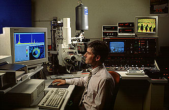

Scanning Electron Microscopy (SEM)The scanning electron microscope (SEM) allows us to see things at magnifications hundreds of times greater than the light microscope. It can focus on both the "hills" and the "valleys" of an object at the same time, so that sharp images of very fine details are produced. However, because the object is viewed in a beam of electrons, rather than light, it appears in shades of grey, like a black and white TV image. False colour can be provided electronically, to emphasise features of interest. As the beam of electrons scans backwards and forwards across the surface of a sample, a number of different signals are produced. Electrons provide the magnified image of the surface. X-rays are also produced, and the X-ray spectrum gives the composition of the area being examined. The spectrum is quite similar to that produced in X-ray fluorescence analysis, but the technique is called energy dispersive X-ray analysis (EDXA). Maps which show the distribution of the chemical elements across the sample surface can also be generated. Small objects can be placed in the SEM, for examination of surface detail. This approach is especially useful for jewellery and coins but an electronic charge builds up on the surface of non-conductors and repels the electrons. For this reason, a fine conductive coating of gold or carbon must be applied to glass, ceramic or stone so that they can be examined. Museum objects cannot be coated in this way so it is usual to remove a small sample, or to take a cast of the surface. To understand the internal structure of a material, a polished cross-section may be prepared. Look up another technique |